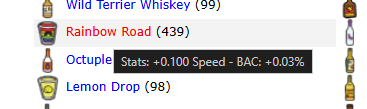

Assist with inventory management and quickly reveal hidden item stats.
Tired of searching the HoboWars wiki to remember exactly what each alcoholic or mixed drink does? The Backpack Helper completely solves this by directly injecting the base stat gains and potential effects into the item's hover tooltip.

Hovering over a drink in your Backpack to view its stat gains.
Simply hover your mouse cursor over any drink located inside your Backpack or Living Area to instantly view its data.